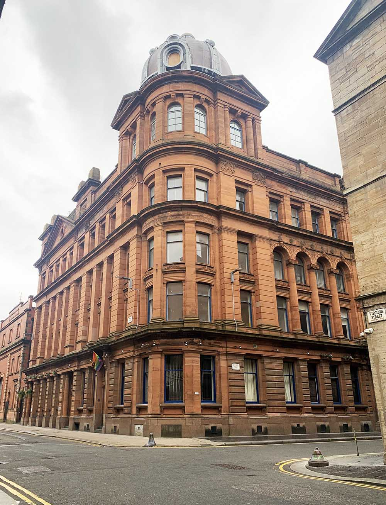
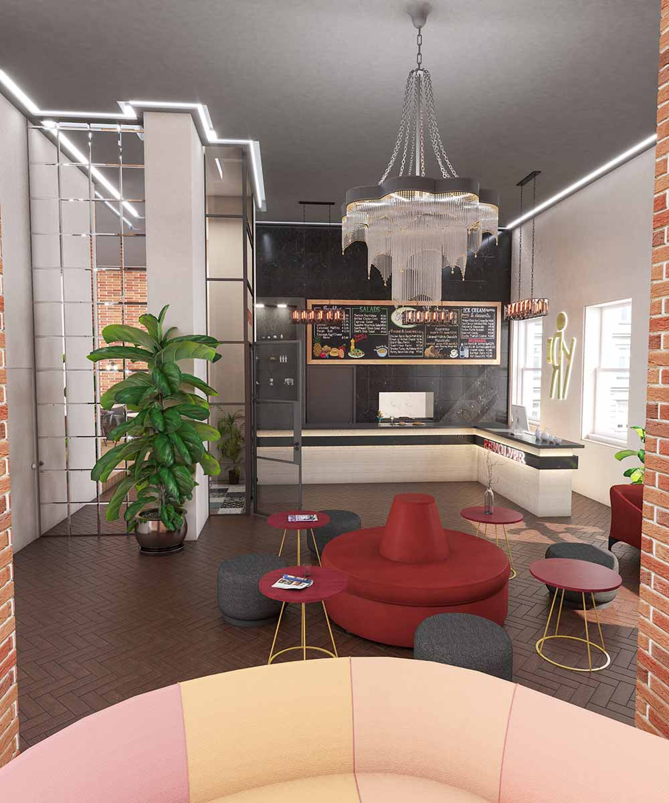
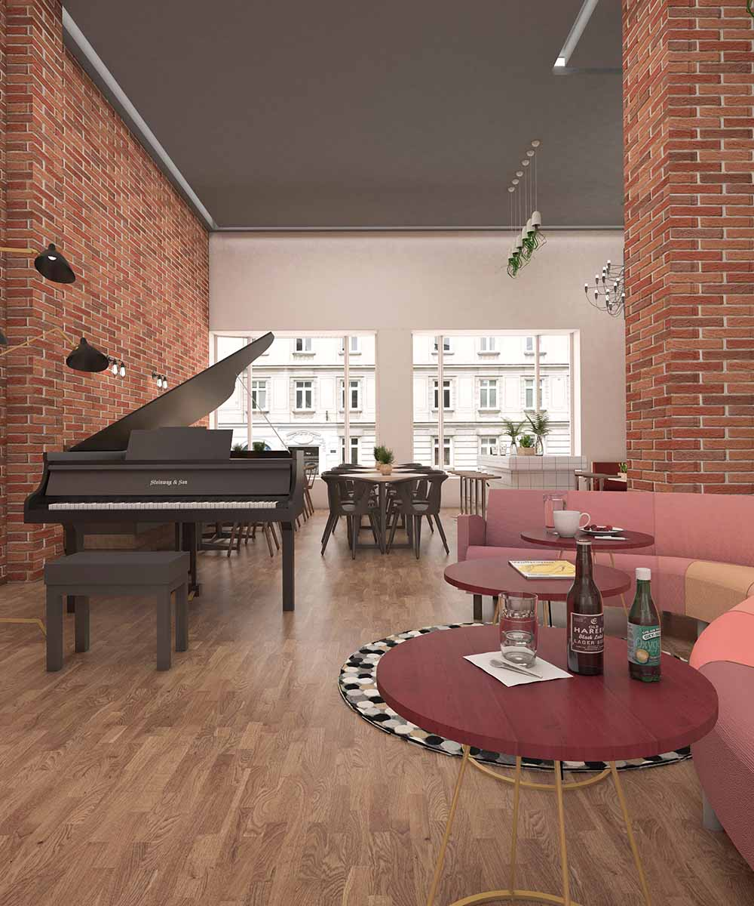
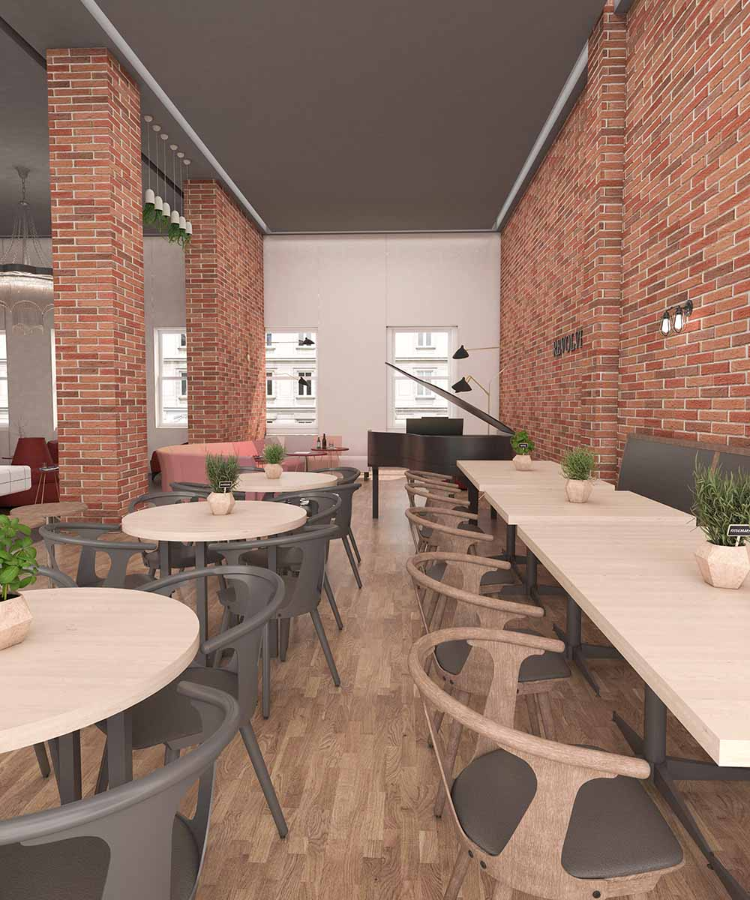
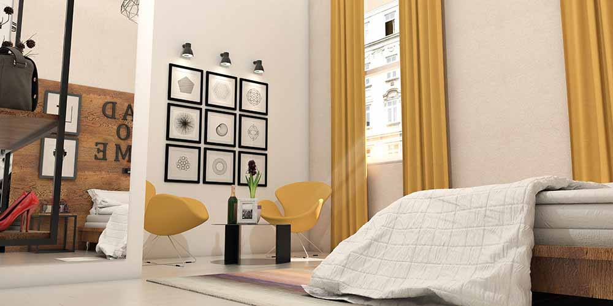
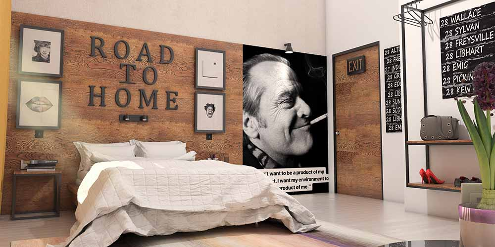
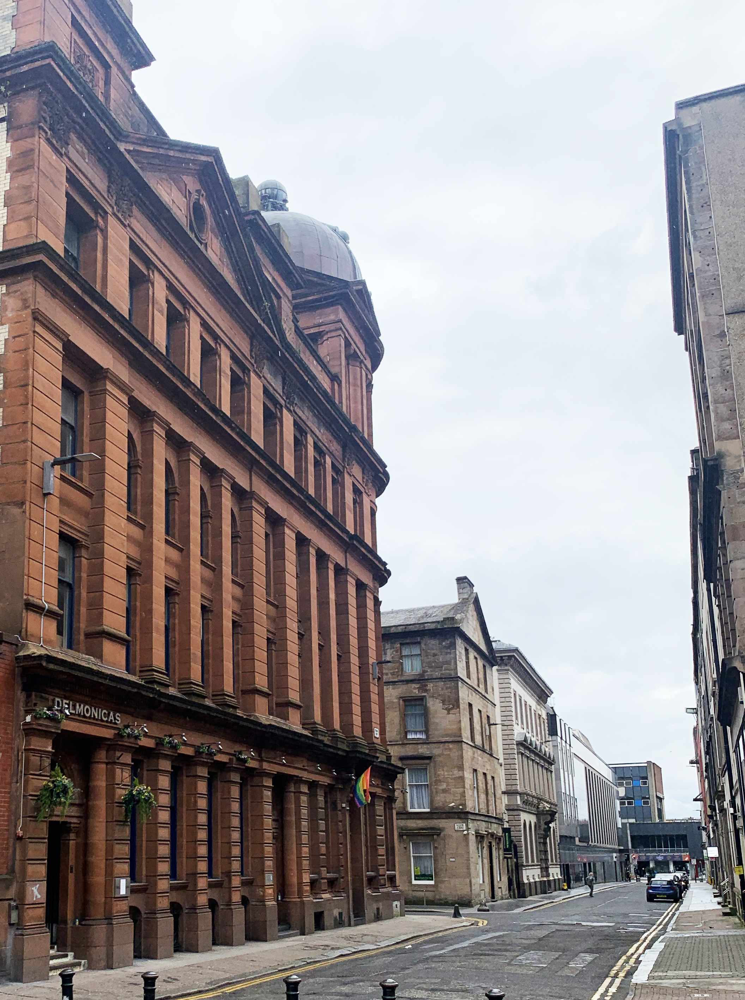

Interior Design
Project Management
Space Management Strategy
Hotel-Hostel
4250m2
Completed
When the Metro Inns hotelling group took possession of this distinctive 19th-century building, the property was in a severely deteriorated condition, requiring a complete interior redesign alongside major mechanical and electrical upgrades. The result is The Revolver Hostel, a striking 205-bed hospitality project located in Glasgow’s vibrant Merchant City Quarter, within close proximity to the city’s cultural, academic and nightlife hubs. Developed over four years, the project transforms the nearly ruined structure into a contemporary hostel experience, where historic character enhances a premium yet welcoming atmosphere. The design integrates industrial contemporary elements with subtle French influences, creating warm and inviting communal spaces. Music plays a central role in the identity of the building, featuring a dedicated recording studio, live performances and DJ sessions within the common areas. A rooftop terrace hosts a state-of-the-art Aztec-inspired event space and shisha lounge, offering a dynamic social destination. Complemented by on-site services including a tour operator, ticket shop and all-day dining facilities, the project delivers a seamless, engaging and modern travel experience for a diverse range of guests.





